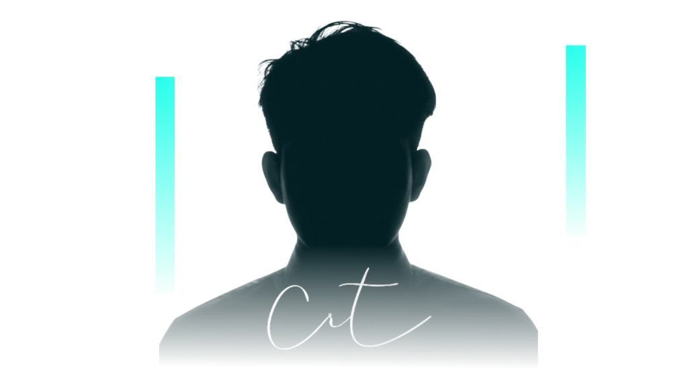
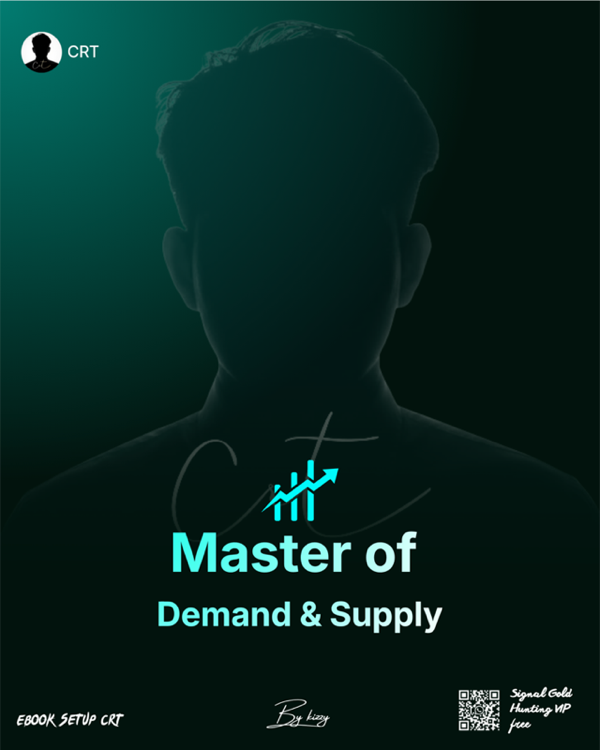
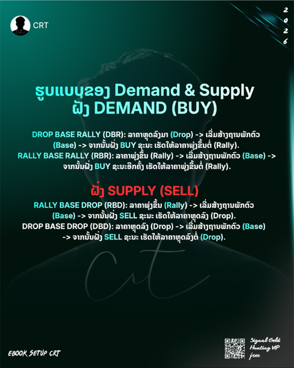
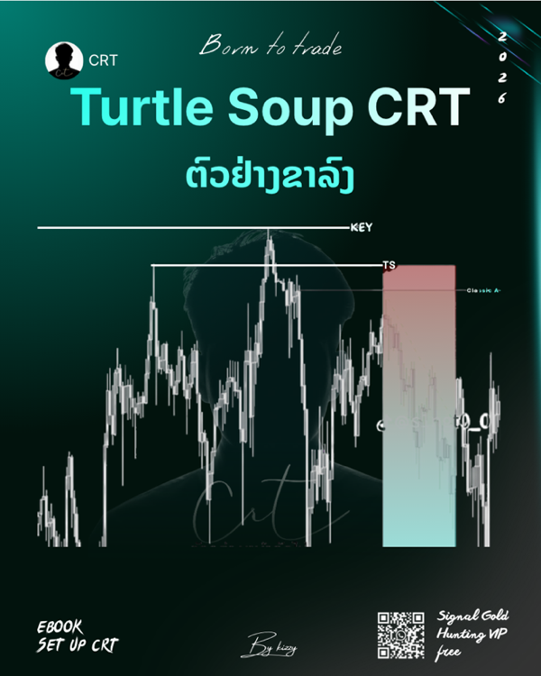
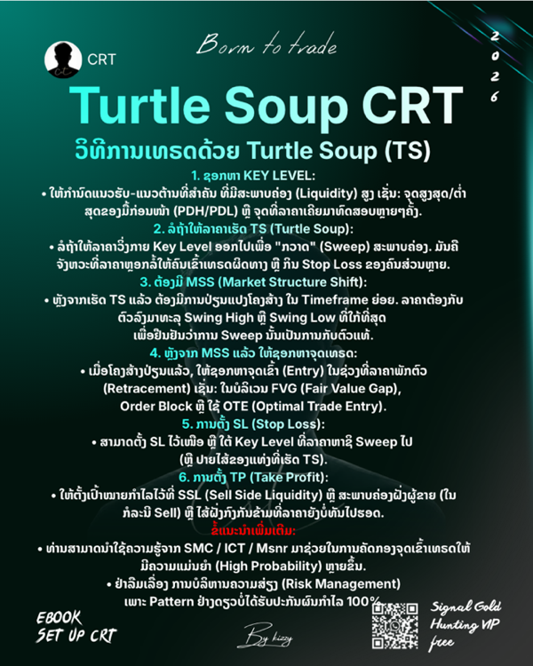
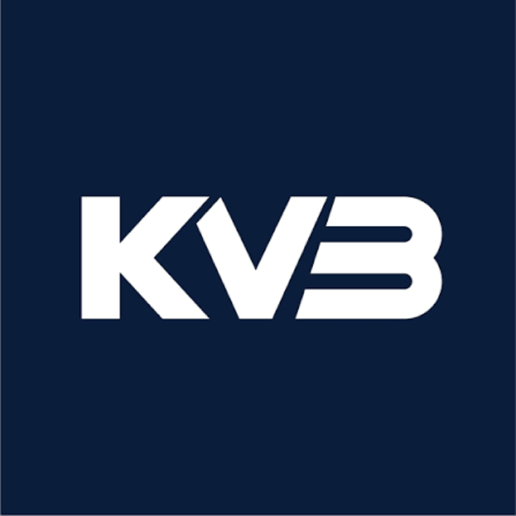
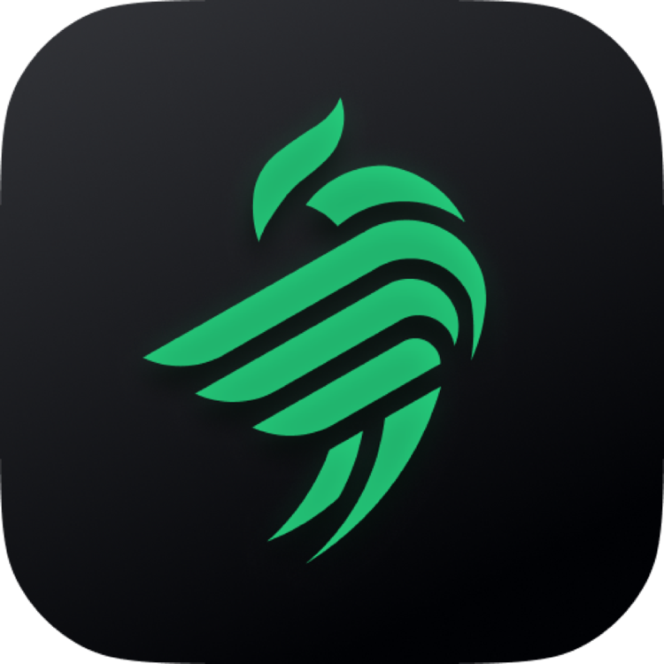
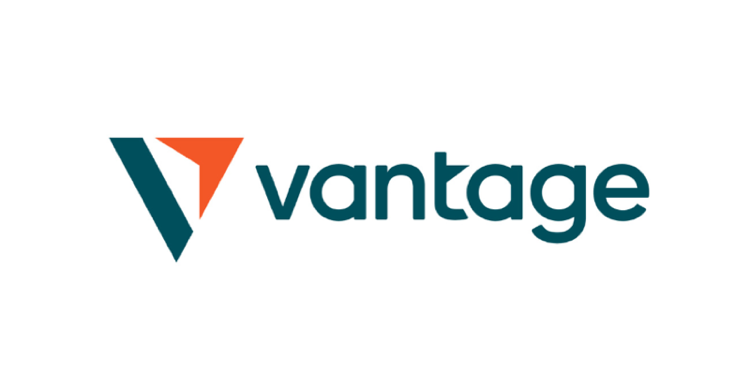

ระบบสแกนเนอร์อัจฉริยะแบบ Multi-Timeframe (H4, H3, H2, H1, M15) เข้าเป้า TF ใดลั่นไกทันที! ครบทั้ง SMC (OB+FVG), Inversion FVG (iFVG), Demand/Supply, MSNR & Key SNR, และ Turtle Soup CRT
By Kizzy (Master of Demand & Supply 28 หน้าเต็ม)
Munehisa Homma (1724 - 1803)
Ebook Set up CRT By Kizzy (5 หน้า)
Bullish & Bearish Engulfing
Equilibrium & Momentum Shift
Institutional Rejection Wick Trigger
สแกนคู่ขนานทุกไทม์เฟรม H4, H3, H2, H1, M15 เข้าเป้าไทม์เฟรมใด ลั่นไกส่งสัญญาณทันที ไม่ต้องรอนาน!
ตรวจจับการเข้าสะสมของสถาบัน (Institutional Footprint) และรอราคา Pullback เข้าทดสอบโซน Order Block ร่วมกับ Fair Value Gap
โมเดลยอดนิยม: เมื่อ FVG โซนเดิมถูกทะลุอย่างรุนแรง จะพลิกหน้าที่กลายเป็นแนวรับ/ต้านใหม่ทันทีเพื่อลั่นไกสไนเปอร์
คำนวณฐานราคาความต้องการซื้อ-ขาย (RBR, DBR, RBD, DBD) สดใหม่ ที่ราคายังไม่เคยมาเคลียร์คำสั่งซื้อขาย
อ่านโครงสร้างตลาด Market Structure Shift (MSS / BOS) และเข้าเทรดเมื่อราคาย่อตัวกลับมาทดสอบแนวรับ-ต้านหลัก (SNR)
Candle Range Theory: ดักจังหวะราคากวาด Stop Loss เหนือ/ใต้กรอบเดิม แล้วทิ้งไส้เทียนยาวดึงกลับ เพื่อเข้าปลายไส้แม่นยำสูงสุด
สแกนแยกอิสระในแต่ละ Timeframe เข้าเป้าใน TF ใด ระบบลั่นไกส่งสัญญาณทันที พร้อมแจ้งเตือนข่าว ForexFactory ป้องกันความเสี่ยง
ระบบติดตามข่าวสดประจำวันแบบ Real-Time คัดเฉพาะข่าวที่ส่งผลกระทบต่อราคาทองคำ (XAUUSD) พร้อมกลยุทธ์ตามรอย Smart Money
โบรกเกอร์ส่วนใหญ่จะถ่างสเปรด (Spread Markup) สูงถึง 30-80 จุด และอาจเกิด Slippage ข้ามไม้ Stop Loss ทำให้เสียเปรียบอย่างมาก
สถาบันรายใหญ่มักทุบหรือลากราคาหลอก (Liquidity Sweep) สวิงกิน Stop Loss ทั้งฝั่ง Buy และ Sell ก่อนวิ่งทิศทางจริงตามปัจจัยพื้นฐาน
เมื่อแท่ง M15 จบ และเกิดโมเดล Inversion FVG หรือ Turtle Soup CRT กราฟจะเปิดจุดเข้าเทรดปลายไส้ที่มี Risk-Reward Ratio สูงที่สุด
เช็กตารางประกาศตัวเลขเศรษฐกิจสด ค่าพยากรณ์ (Forecast) และค่าก่อนหน้า (Previous) ได้โดยตรงที่ Forex Factory เพื่อความแม่นยำสูงสุด
เรียนรู้ครบทุกศาสตร์: Ebook Master of Demand & Supply By Kizzy (28 หน้าเต็ม (ຈົບບົດຮຽນ)), Candlestick Trading Bible, และ Turtle Soup CRT อ่านได้ทั้ง 3 ภาษา
ເປີດເຜີຍຕຳລາ Demand & Supply: ຫຼັກການ Balance vs Imbalance, DBR, RBR, RBD, DBD, Freshness, Tested/Used Zone, Base Time, Fibo Golden Ratio ແລະ ແຜນເທຣດຈິງ


ວິທີການເທຣດດ້ວຍ Turtle Soup (TS) ພ້ອມ 6 ຂັ້ນຕອນລະອຽດ, ຕົວຢ່າງຂາຂຶ້ນ & ຂາລົງ ພ້ອມຮູບພາບກຣາຟຈິງຈາກ Kizzy!


เรียนรู้พฤติกรรมราคาแท่งเทียนสถาบันพร้อมภาพกราฟิกประกอบของจริง
ต้นกำเนิดการวิเคราะห์พฤติกรรมราคาจากตลาดค้าข้าวญี่ปุ่น และเหตุผลที่ทำไมแท่งเทียนจึงสะท้อนจิตวิทยาตลาดได้ดีที่สุด
โครงสร้าง Open, High, Low, Close, Real Body และไส้เทียนบน-ล่าง พร้อมภาพประกอบแท่งกระทิงและแท่งหมี
จิตวิทยาเนื้อเทียนยาวสะท้อนแรงซื้อ/ขายของสถาบัน และวิธีหลีกเลี่ยงเนื้อเทียนสั้นในตลาดไซด์เวย์
Long Upper Shadow vs Long Lower Shadow ร่องรอยการปฏิเสธราคา (Rejection) เพื่อดักจับ Liquidity Sweep
รูปแบบแท่งกลืนกินกลับตัวระดับสถาบัน พร้อมแผนผังอินโฟกราฟิก Bullish & Bearish Engulfing
ไกปืนสไนเปอร์เข้าปลายไส้ พร้อมภาพกราฟิกเปรียบเทียบ Inverted Hammer vs Hanging Man ชัดเจน
เปิดบัญชีผ่านลิงก์พาร์ทเนอร์อย่างเป็นทางการของ Kizzy เพื่อรับสิทธิประโยชน์ สเปรดทองคำแคบ และการซัพพอร์ตดูแลระดับ VIP
โบรกเกอร์ระดับโลก สเปรดทองคำแคบพิเศษ ฝาก-ถอนไวอัตโนมัติ 24 ชม. ผ่าน BCEL One

โบรกเกอร์ชั้นนำ ส่งคำสั่งเทรดตรงถึงตลาดโลกอย่างเสถียร รองรับการเทรดแบบสถาบัน

บัญชี Classic NDD บน MT5 ออกแบบเพื่อการรันบอทและการเทรดตามสัญญาณโดยเฉพาะ

โบรกเกอร์ระดับพรีเมียม สเปรดคม โลหะเงิน (XAGUSD) และทองคำแคบ พร้อมโปรโมชั่นเงินฝาก
ระบบเทรดประสิทธิภาพสูง ปลอดภัย เทรดได้ทั้ง Forex, ทองคำ และสินทรัพย์ดิจิทัล
เริ่มต้นรับสัญญาณเทรดคุณภาพสูงได้ตั้งแต่วันนี้ผ่าน BCEL One